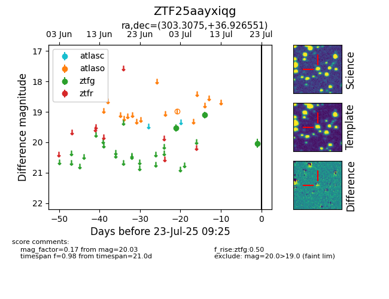

Target ZTF25aayxiqg at 2025-07-23 12:37, see:
FINK: fink-portal.org/ZTF25aayxiqg
Lasair: lasair-ztf.lsst.ac.uk/objects/ZTF25aayxiqg
ALeRCE: alerce.online/object/ZTF25aayxiqg
alt names
ZTF25aayxiqg (ztf,fink)
coordinates:
equatorial (ra, dec) = (303.3075,+36.92655)
galactic (l, b) = (74.4041,+1.45526)
photometry
last atlaso=18.99, ztfg=20.03
1 atlaso, 3 ztfg detections
